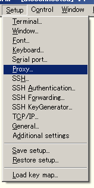

Description of Proxy connection using UTF-8 TeraTerm Pro with TTSSH2
Proxy is a technology which can be used to connect to outisde where Internet environment and LAN are separated as shown in the following
There are various types of Proxy for this purpose and UTF-8 TeraTerm Pro with TTSSH2 supports the following types of Proxy¤
To configure, select [Setup] menu, then choose [Proxy].

Then [Proxy Setup] dialog will appear. Specify the type of proxy in [Type], Hostname (or IP address) of Proxy server in [Hostname], Proxy port number in [Port number] and click [OK]. [Username] and [Password] can be used only when Proxy needs an authentication.
Now, you are ready - try to connect.